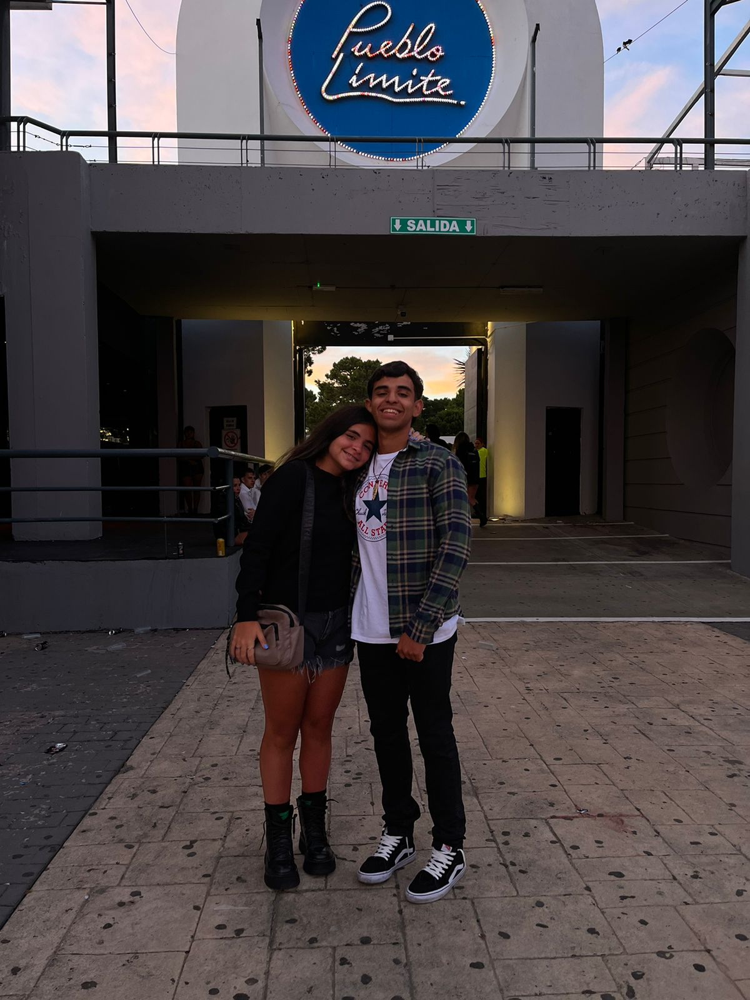

📸 Nuestros Momentos

📖 Cómo comenzó todo
Nos conocimos en aquel lugar que parecÃa insignificante, nuestra esquinita, pero hoy lo veo como el lugar en donde conoci a mi amor. Cada dÃa desde entonces vivimos muchos recuerdos hermosos.
🤠Lo que compartimos
Estoy mas que agradecido por tener tantos recuerdos a tu lado cami, ya sea peleando, molestandonos, riendonos, viendo series, yendo a merendar, agradezco que haya sido con vos, espero que sigamos compartiendo muchas cosas y seguir aprendiendo del otro y apoyarnos mutuamente en nuestras metas.
🧠Nuestro tema favorito
Siento que esta cancion nos marco como relacion, y por eso siempre es muy especial para mi, tiamu ğŸ¤